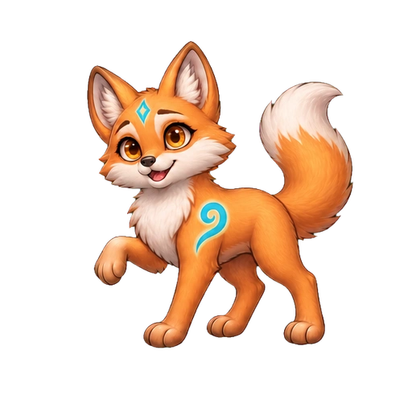
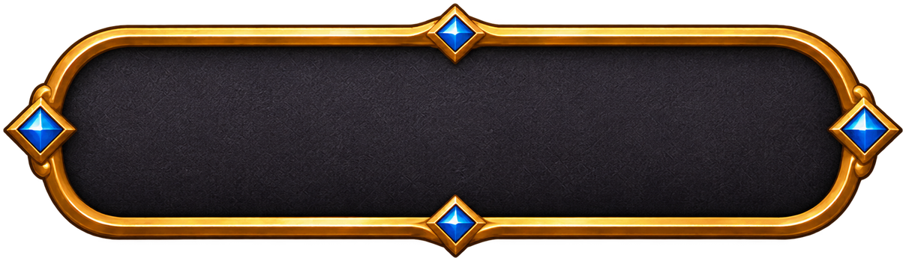
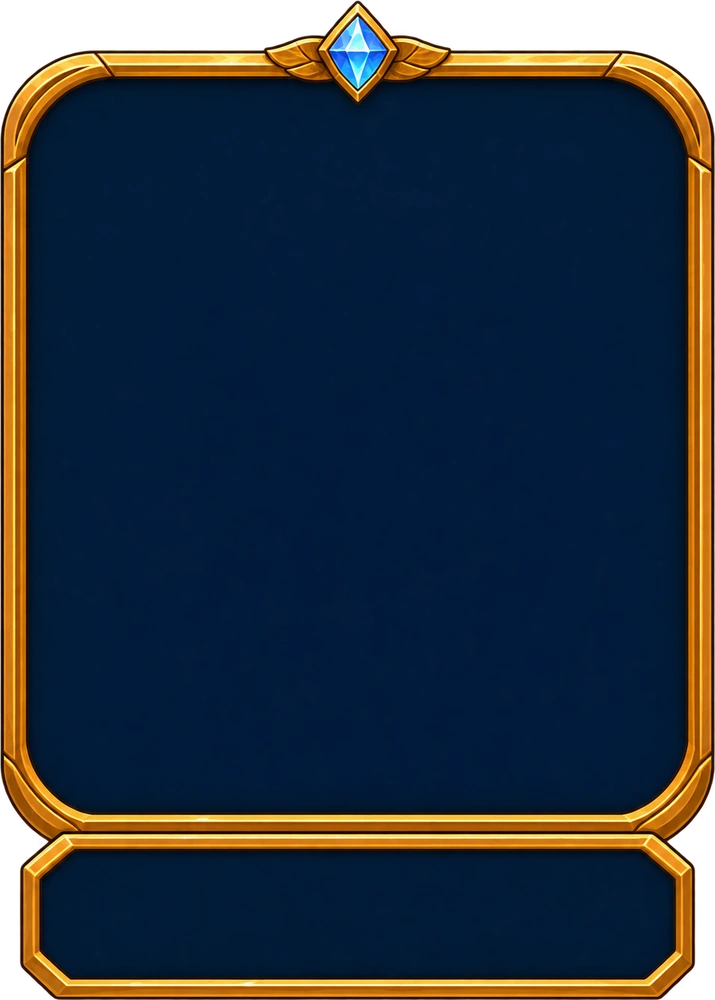
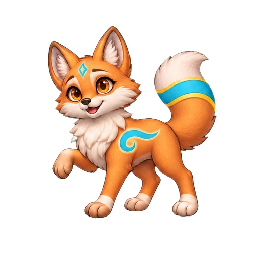

Kamarád, kterého chceš zachránit
Nové otevřené oči, měkké tváře a laskavý úsměv. Doporučený prostřední výraz je základem celé pětice.

Původní textura dnes slouží i katakombovému protivníkovi. Nový milý parťák později dostane vlastní asset a animace.
Jeden parťák. Společná cesta.
Pět podob roste díky novým úspěchům v různých modulech. Každý modul přispěje nejvýše dvakrát. Celou proměnu odliší srst a ocas i bez záře.
Hranice 0 / 4 / 10 / 20 / 32 jsou návrh tempa pro 21 uzlů, nikoli měna ani produkční nastavení. Kratší cesta má vlastní pevné milníky.
Současný zdroj
Nový parťákStejná nová tvář, oranžový kožíšek a jeden ocas. Velké vzory nahrazují drobné čáry. Jde o statické koncepty pro novou sadu animací.
Každý modul pomůže
Vyber uzel a přidej mu nový stupeň. I a II jsou dva jedinečné příspěvky; opakování už nic nepřidá. Plynulost a Mistrovství dál odměňují běžný útok.

Společná cesta
Nyní
PříštěDva nové stupně run
Runu I přináší až nový vyšší stupeň; II zlepší stejnou runu. Pracovní názvy Velmistr a Legenda čekají na schválení. Dosavadní Mistrovství zůstává u +1 běžného útoku.
Tvář i v malém měřítku
Buňka 512 px × současná škála 0,25 = 128 herních pixelů. Na tabletu se náhled zmenší stejně jako hra. Zásah I / II zde ukazuje příklad prvního uzlu: 1 / 2 HP.

Pět podob · stejné měřítko
Jedno vlastní použití každé rodiny za souboj; v obraně dočasný zámek bez spotřeby. Štít a léčení předvádějí cíl a účinek obrazem, bez dosud neurčených čísel. Liška je statická, animují se pouze UI a efekty.